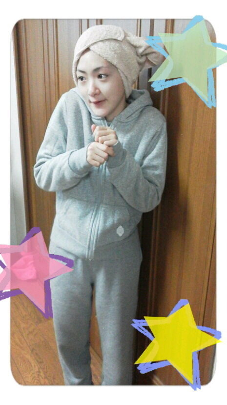

| 2012/12 31 Mon | ２０１２年ありがとうございまし たヽ(・ ∀・)ノ |
あと数時間で今年が終わりますね。
今、来年と言っている２０１３年が今年と名前が変わる瞬間。
そう２０１２年から２０１３年に変わる１２時００分はみんなで手をつないで声を合わて
『地上にはいなかったーヽ(・∀・)ノ』
と言って向かえる予定です。
みなさん誕生日のコメントありがとうございました！
あんなにコメントが来たことがなかったのでびびりました！
支えてくださってありがとうございます!!
そんな生駒は今年一年。
悔しくて、寂しくて、怖くて、パニックになり、でもそれ以上に楽しくて、嬉しいくて、恵まれた1年になりました。
私はアイドルの事を全く知りませんでした。
だけどアイドルとして、乃木坂として過ごしてみるととても言葉では表す事は出来ないくらい大変で素晴らしいものでした。
アイドルだけじゃなくて、みなさんも今年沢山働いて勉強してなど大変な一年だったと思います。
でもそれ以上に楽しい一年ではなかったのではないでしょうか？
今日はきっとゆっくり出来るだろうから少し今年を振り返ってみるといいかもしれませんね。
いこまちゃん。
いろいろ振り返ってみると反省する事だらけでした。
ただ来年の目標を見つけました！
それは
他とは違う人になること!!ですヽ(・∀・)ノ
そうしたらきっと新しい可能性も広がるし、気持ちも楽なはず(笑)
今までの形を破ったらそれも大変かもしれないけど、今までなかったものだから比べる必要がなくなるわけで〜ヽ(・∀・)ノ
私は私なんです。
だから他の誰かになれるはずがありません。不可能なんです。
だからここにいる人はこうでなければいけない。というのは出来ないのです。
だからその分
私は新しい可能性を見つけるために頑張ります!!
これから乃木坂は変化していくと思います。
それがどうなるかはまだわかりません。
でも私はメンバーとして乃木坂がよくなるように、ライバルになれるように頑張りたいと思います。
みなさんどうかよろしくお願いいたします!!
今年一年沢山ありがとうございました!!

お母さんに
『頭がひつじみたい』って言われたよ。
あとお誕生日の日にお母さんが
『あんた年取るごとに若くなってくね〜あんたは小５かっ！』
と言われたよ。
さすがのいこまちゃんも少しショックだを

日本中のみなさんこれが１７歳ですヽ(・∀・)ノ
ではまたらいねーん!!
へばなっ!!
コメント(461)
2012/12/31 15:18